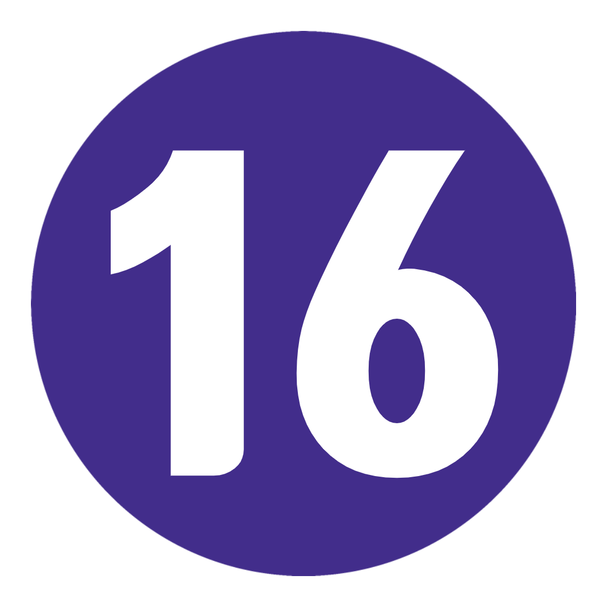
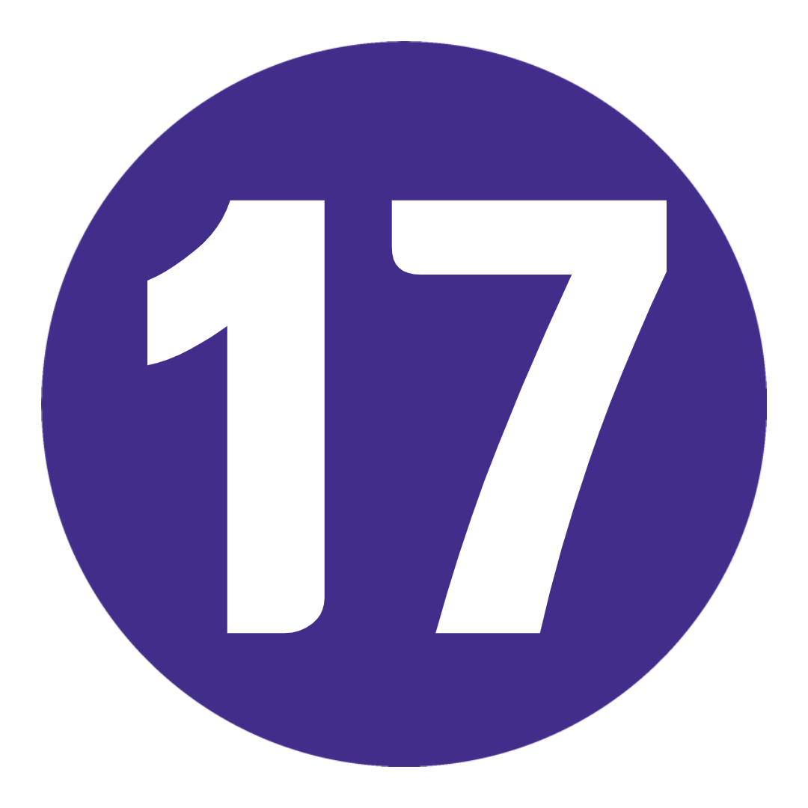

여행 개요
지도
TRIP VIBE = 그룹 활동과 가장 중요한 YOU 시간의 완벽한 조화.
3주 동안 꼭 가봐야 할 도시, 유명한 아이콘, 신선한 AF 풍경이 혼합된 가방을 원하십니까? 우리는 당신을 얻었다.
모든 목적지에서 2박을 하면(거의) 명소를 둘러보고 자랑할 가치가 있는 잘 알려지지 않은 보석을 발견할 더 많은 시간을 갖게 됩니다.
타워, 탠덤 패러글라이딩 및 시음 - 맥주, 피자, 슈니첼 및 스트룹와플 종류의 이 Topdeck 모험은 진지하게 제공됩니다.
여행 일정
-
 런던, 영국
빅 벤. 버스를. 버킹엄 궁전. 런던에 오신 것을 환영합니다(특히 이름이 B로 시작하는 경우). 하나의 전설적인 유로 모험을 시작하는 상징적인 도시 – 이치에 맞습니다. 오늘 저녁에 우리는 처음으로 포함된 그룹 저녁 식사를 하기 전에 함께 타는 여행 동료들을 만날 것입니다. 준비하세요: 지금 모험이 시작됩니다.
런던, 영국
빅 벤. 버스를. 버킹엄 궁전. 런던에 오신 것을 환영합니다(특히 이름이 B로 시작하는 경우). 하나의 전설적인 유로 모험을 시작하는 상징적인 도시 – 이치에 맞습니다. 오늘 저녁에 우리는 처음으로 포함된 그룹 저녁 식사를 하기 전에 함께 타는 여행 동료들을 만날 것입니다. 준비하세요: 지금 모험이 시작됩니다.
키워드 공식 만찬 -
 런던에서 프랑스 파리까지
다리를 흔드십시오 – 우리는 영국 해협을 건너기 위해 일찍 길을 치고 있습니다. 모나리자와 세계에서 가장 미친 원형 교차로인 코코 샤넬(Coco Chanel)의 고향인 파리는 문화, 오뜨 꾸뛰르, 군침이 도는 음식의 모든 것에 대해 유럽의 수도라는 명성을 얻을 자격이 있습니다. 드라이브 투어를 통해 빛의 도시에 대해 더 잘 알아보세요. 그리고 저녁식사로? 선택은 여러분의 몫이지만 여행 리더가 모든 유용한 정보를 알고 있습니다. 그냥 물어보세요. 꼭꼭!
런던에서 프랑스 파리까지
다리를 흔드십시오 – 우리는 영국 해협을 건너기 위해 일찍 길을 치고 있습니다. 모나리자와 세계에서 가장 미친 원형 교차로인 코코 샤넬(Coco Chanel)의 고향인 파리는 문화, 오뜨 꾸뛰르, 군침이 도는 음식의 모든 것에 대해 유럽의 수도라는 명성을 얻을 자격이 있습니다. 드라이브 투어를 통해 빛의 도시에 대해 더 잘 알아보세요. 그리고 저녁식사로? 선택은 여러분의 몫이지만 여행 리더가 모든 유용한 정보를 알고 있습니다. 그냥 물어보세요. 꼭꼭!
키워드 아침밥 + 파리 하이라이트 드라이브 -
 파리
네, 드디어 오셨습니다. 오늘은 원하는 대로 할 수 있는 날입니다. 루브르 박물관(미리 티켓을 예약하세요!)과 오르세 미술관을 방문하여 버킷리스트를 확고히 만드십시오. 개선문(Arc de Triomphe)의 사진을 찍어보세요. 샹젤리제 거리를 거닐다. 또는 낭만적인 뒷골목에 숨겨진 보석을 스스로 발견하십시오. 걷는 것이 당신의 것이 아니겠습니까? 옵션으로 제공되는 자전거 투어에서 다리를 쭉 뻗으세요. 나중에 옵션으로 제공되는 세느강 유람선에 올라타거나 드레스를 입고 선택적인 카바레 쇼를 감상하세요.
파리
네, 드디어 오셨습니다. 오늘은 원하는 대로 할 수 있는 날입니다. 루브르 박물관(미리 티켓을 예약하세요!)과 오르세 미술관을 방문하여 버킷리스트를 확고히 만드십시오. 개선문(Arc de Triomphe)의 사진을 찍어보세요. 샹젤리제 거리를 거닐다. 또는 낭만적인 뒷골목에 숨겨진 보석을 스스로 발견하십시오. 걷는 것이 당신의 것이 아니겠습니까? 옵션으로 제공되는 자전거 투어에서 다리를 쭉 뻗으세요. 나중에 옵션으로 제공되는 세느강 유람선에 올라타거나 드레스를 입고 선택적인 카바레 쇼를 감상하세요.
키워드 아침밥
추가 옵션 파리 카바레 쇼: €80부터 / 파리 세느강 유람선: €10부터 / 파리 자전거 투어: €30부터 -
 파리에서 스위스 알프스,스위스까지
도시 풍경부터 풍경까지, 오늘 우리는 스위스 알프스로 출발합니다! 성대를 따뜻하게 하고 산으로 가는 길에 흥겨운 소리를 들을 것입니다. 당신의 상상 속의 동화 같은 마을에 신호를 보내세요. 우리가 밤을 보낼 곳은 아주 기이한 엥겔베르그(Engelberg)입니다. 오늘 밤 우리는 호텔 바에 가거나 신선한 고산 공기에서 휴식을 취하기 전에 그룹 저녁 식사에 갇힐 것입니다. 당신은 당신을합니다 : 그것이 전부입니다.
파리에서 스위스 알프스,스위스까지
도시 풍경부터 풍경까지, 오늘 우리는 스위스 알프스로 출발합니다! 성대를 따뜻하게 하고 산으로 가는 길에 흥겨운 소리를 들을 것입니다. 당신의 상상 속의 동화 같은 마을에 신호를 보내세요. 우리가 밤을 보낼 곳은 아주 기이한 엥겔베르그(Engelberg)입니다. 오늘 밤 우리는 호텔 바에 가거나 신선한 고산 공기에서 휴식을 취하기 전에 그룹 저녁 식사에 갇힐 것입니다. 당신은 당신을합니다 : 그것이 전부입니다.
키워드 아침밥 + 공식 만찬 -
 스위스 알프스
진지한 탐구를 하는 또 다른 자유로운 날. 등산. 자전거 타기. 스릴을 추구합니다. 치즈 먹기(유당 불내증이 아닌 경우). 회전 곤돌라를 타고 티틀리스 산 정상까지 올라가 모든 장엄한 경치를 감상할 수 있습니다(노력 없이). 그런 다음 세계 최고의 핫 초콜릿을 찾으러 다시 내려갈 수 있습니다. 또는 편안히 앉아 호텔에서 시원한 맥주를 즐기십시오. 여행 리더가 모든 기록을 가지고 있지만 오늘을 어떻게 보낼지는 110% 당신에게 달려 있습니다.
스위스 알프스
진지한 탐구를 하는 또 다른 자유로운 날. 등산. 자전거 타기. 스릴을 추구합니다. 치즈 먹기(유당 불내증이 아닌 경우). 회전 곤돌라를 타고 티틀리스 산 정상까지 올라가 모든 장엄한 경치를 감상할 수 있습니다(노력 없이). 그런 다음 세계 최고의 핫 초콜릿을 찾으러 다시 내려갈 수 있습니다. 또는 편안히 앉아 호텔에서 시원한 맥주를 즐기십시오. 여행 리더가 모든 기록을 가지고 있지만 오늘을 어떻게 보낼지는 110% 당신에게 달려 있습니다.
키워드 아침밥
추가 옵션 티틀리스 산으로의 경치 좋은 여행: 최저 CHF 92(여름에만 해당) -
 스위스 알프스에서 피사를 거쳐 이탈리아 피렌체까지
엄마를 위해 미니 퐁듀 세트를 사세요. 커피 내려. 그리고 스위스와 작별을 고합니다. 이제 장화의 나라로 떠납니다. 피사에서 사진을 찍기 위해 창의력을 발휘하고, 젤라토의 발상지인 피렌체로 들어서면서 음식을 노래하게 만드세요. 오늘 밤은 당신이 꿈꾸던 푸짐한 토스카나 요리와 좋은 음식을 한 국자(또는 두 개) 맛볼 수 있는 기회입니다. 과제: 이틀 안에 좋아하는 맛을 결정하십시오. 우리는 당신이 할 수 없습니다.
스위스 알프스에서 피사를 거쳐 이탈리아 피렌체까지
엄마를 위해 미니 퐁듀 세트를 사세요. 커피 내려. 그리고 스위스와 작별을 고합니다. 이제 장화의 나라로 떠납니다. 피사에서 사진을 찍기 위해 창의력을 발휘하고, 젤라토의 발상지인 피렌체로 들어서면서 음식을 노래하게 만드세요. 오늘 밤은 당신이 꿈꾸던 푸짐한 토스카나 요리와 좋은 음식을 한 국자(또는 두 개) 맛볼 수 있는 기회입니다. 과제: 이틀 안에 좋아하는 맛을 결정하십시오. 우리는 당신이 할 수 없습니다.
키워드 아침밥 + 피사를 방문하여 유명하 사탑을 감상하세요
-
 피렌체
플로렌스에는 빌보 배긴스보다 더 많은 이야기가 있고 런던 힙스터보다 더 많은 문화가 있으며 세계에 David(9학년 남자친구가 아닌 동상)를 주었습니다. 우리는 지역 가이드와 함께 심도 있는 도보 여행을 통해 땅의 위치를 알 수 있습니다. 보너스 가죽 만들기 데모(여기서는 실제 공예품). 그런 다음: 새로 발견한 지식을 가지고 혼자 거리를 누비십시오. 우피치 갤러리입니다. 베키오 다리. 시뇨리아 광장. 두오모. 모든 것을 볼 수는 없지만 시도해 볼 수는 있습니다! 우리는 오늘 밤 카드에 그룹 저녁 식사를 포함시켰습니다. 그러니 젤라또를 가볍게 드세요. 아니면 하지마.
피렌체
플로렌스에는 빌보 배긴스보다 더 많은 이야기가 있고 런던 힙스터보다 더 많은 문화가 있으며 세계에 David(9학년 남자친구가 아닌 동상)를 주었습니다. 우리는 지역 가이드와 함께 심도 있는 도보 여행을 통해 땅의 위치를 알 수 있습니다. 보너스 가죽 만들기 데모(여기서는 실제 공예품). 그런 다음: 새로 발견한 지식을 가지고 혼자 거리를 누비십시오. 우피치 갤러리입니다. 베키오 다리. 시뇨리아 광장. 두오모. 모든 것을 볼 수는 없지만 시도해 볼 수는 있습니다! 우리는 오늘 밤 카드에 그룹 저녁 식사를 포함시켰습니다. 그러니 젤라또를 가볍게 드세요. 아니면 하지마.
키워드 아침밥 + 공식 만찬 + 현지 가이드와 함께하는 피렌체 도보여행 -
 피렌체에서 오리비에토를 거쳐 로마로
언덕 위 마을인 오르비에토(Orvieto)에서 남쪽과 아래쪽으로 구덩이를 멈추고 웅장한 대성당을 보고 멧돼지 파니니를 맛보세요. 우리를 믿으십시오. 좋습니다. 그런 다음: 벨라 로마가 기다리고 있습니다! 호텔에 짐을 버리고 도보 여행을 준비하여 모든 도보 여행을 끝내십시오. 판테온(Pantheon)을 지나 트레비 분수(Trevi Fountain)에 2센트를 던지고 스페인 계단(Spanish Steps)에 앉아 거대한 콜로세움(Colosseum)을 확인합니다. 오늘 밤, 당신은 미식가를 위해 디즈니랜드에 있습니다. 가서 받아.
피렌체에서 오리비에토를 거쳐 로마로
언덕 위 마을인 오르비에토(Orvieto)에서 남쪽과 아래쪽으로 구덩이를 멈추고 웅장한 대성당을 보고 멧돼지 파니니를 맛보세요. 우리를 믿으십시오. 좋습니다. 그런 다음: 벨라 로마가 기다리고 있습니다! 호텔에 짐을 버리고 도보 여행을 준비하여 모든 도보 여행을 끝내십시오. 판테온(Pantheon)을 지나 트레비 분수(Trevi Fountain)에 2센트를 던지고 스페인 계단(Spanish Steps)에 앉아 거대한 콜로세움(Colosseum)을 확인합니다. 오늘 밤, 당신은 미식가를 위해 디즈니랜드에 있습니다. 가서 받아.
키워드 아침밥 + 오르비에토 방문 + 트립 리더와 함꼐하는 로마 도보 여행 -
 로마
Lizzie McGuire 영화의 환상을 실현할 시간입니다. 오늘은 Vespa, 에스프레소, 두 뺨 키스 및 피자에 관한 모든 것입니다. 카드에 바티칸 시국의 선택적 가이드 투어가 있습니다. 또는 Capitoline Hill로 올라가 포로 로마노와 콜로세움의 멋진 전망을 감상해 보세요. 뭔가 좀 더 여유로운 느낌? 현지인이 하는 대로 하고 현지 카페나 광장에서 약간의 돌체 파 니엔테(맛있는 나태함)에 탐닉하십시오. 오늘 밤, 2라운드를 위해 뚱뚱한 바지를 털어내세요. 모든 젤라토 맛을 먹어본 것 같나요? Fatamorgana로 향하고 다시 생각하십시오.
로마
Lizzie McGuire 영화의 환상을 실현할 시간입니다. 오늘은 Vespa, 에스프레소, 두 뺨 키스 및 피자에 관한 모든 것입니다. 카드에 바티칸 시국의 선택적 가이드 투어가 있습니다. 또는 Capitoline Hill로 올라가 포로 로마노와 콜로세움의 멋진 전망을 감상해 보세요. 뭔가 좀 더 여유로운 느낌? 현지인이 하는 대로 하고 현지 카페나 광장에서 약간의 돌체 파 니엔테(맛있는 나태함)에 탐닉하십시오. 오늘 밤, 2라운드를 위해 뚱뚱한 바지를 털어내세요. 모든 젤라토 맛을 먹어본 것 같나요? Fatamorgana로 향하고 다시 생각하십시오.
키워드 아침밥
추가 옵션 바티칸 시국의 현지 가이드 투어: €45부터 -
 로마-베니스
오늘, 우리는 로마에 ciao, 베니스에 ciao라고 말할 것입니다. 이탈리아어 – 혼란스럽죠? 호텔에 체크인한 후에는 모든 소란이 무엇인지 확인할 시간입니다. 산 마르코 광장(St Mark's Square), 도제스 궁전(Doges Palace), 아카데미아 다리(Accademia Bridge) 등을 둘러보는 도보 여행을 통해 베니스의 흔한 용의자들에 대해 알아보세요. 그리고 나서 – 이 아름다운 떠 있는(침몰하는) 도시는 당신의 것입니다. 우리의 제안? 베니스(Venice)의 자홍색 일몰 중 하나가 내려다보이는 스프레이를 즐겨보세요. 이것은 당신의 순간입니다.
로마-베니스
오늘, 우리는 로마에 ciao, 베니스에 ciao라고 말할 것입니다. 이탈리아어 – 혼란스럽죠? 호텔에 체크인한 후에는 모든 소란이 무엇인지 확인할 시간입니다. 산 마르코 광장(St Mark's Square), 도제스 궁전(Doges Palace), 아카데미아 다리(Accademia Bridge) 등을 둘러보는 도보 여행을 통해 베니스의 흔한 용의자들에 대해 알아보세요. 그리고 나서 – 이 아름다운 떠 있는(침몰하는) 도시는 당신의 것입니다. 우리의 제안? 베니스(Venice)의 자홍색 일몰 중 하나가 내려다보이는 스프레이를 즐겨보세요. 이것은 당신의 순간입니다.
키워드 아침밥 + Trip Leader와 함께하는 베니스 도보 여행
추가 옵션 맞춤 여행 티셔츠 또는 후드티를 받으세요: 최저 €21 -
 베니스
수백 년 된 건축물. 독창적인 요리. 그리고 양동이의 문화. 베니스는 탐험을 구걸하고 있습니다. 대운하를 따라 포함된 곤돌라를 탄 후에는 하루 종일 그렇게 할 수 있습니다. 제안이 필요하십니까? 인사이더 팁: 시간을 할애하여 장엄한 Libreria Acqua Alta 서점을 찾거나 Guidecca Island로 여행을 떠나 관광 트레일을 떠나십시오. 방황하십시오. 현지인들과 채팅하세요. 운하와 광장의 미로에서 길을 잃으십시오. 그것이 추억을 만드는 것입니다.
베니스
수백 년 된 건축물. 독창적인 요리. 그리고 양동이의 문화. 베니스는 탐험을 구걸하고 있습니다. 대운하를 따라 포함된 곤돌라를 탄 후에는 하루 종일 그렇게 할 수 있습니다. 제안이 필요하십니까? 인사이더 팁: 시간을 할애하여 장엄한 Libreria Acqua Alta 서점을 찾거나 Guidecca Island로 여행을 떠나 관광 트레일을 떠나십시오. 방황하십시오. 현지인들과 채팅하세요. 운하와 광장의 미로에서 길을 잃으십시오. 그것이 추억을 만드는 것입니다.
키워드 아침밥 + 대운하를 타고 내려가는 곤돌라 -
 베니스에서 오스트리아 알프스까지
가난한 이탈리아어로 마지막 커피 한 잔을 주문하고 (이봐, 당신은 시도했습니다!) 우리가 오스트리아 알프스로 가는 길에 놀라운 풍경을 위해 자신을 준비하십시오. 슈니첼(schnitzel), 슈트루델(strudel), 사운드 오브 뮤직(Sound of Music)보다 훨씬 더 많은 이 스릴을 찾는 사람들의 천국은 GoPro가 후원해야 합니다. 그런 다음: 협곡 타기, 탠덤 패러글라이딩, 스카이다이빙 및 산악 자전거 타기 옵션 활동 중에서 선택하십시오. 아니면 그냥 뒤로 물러나 평온을 즐기십시오. 그룹과 함께 포함된 저녁 식사를 통해 오늘의 스릴 (및 유출)에 대한 이야기를 교환하십시오.
베니스에서 오스트리아 알프스까지
가난한 이탈리아어로 마지막 커피 한 잔을 주문하고 (이봐, 당신은 시도했습니다!) 우리가 오스트리아 알프스로 가는 길에 놀라운 풍경을 위해 자신을 준비하십시오. 슈니첼(schnitzel), 슈트루델(strudel), 사운드 오브 뮤직(Sound of Music)보다 훨씬 더 많은 이 스릴을 찾는 사람들의 천국은 GoPro가 후원해야 합니다. 그런 다음: 협곡 타기, 탠덤 패러글라이딩, 스카이다이빙 및 산악 자전거 타기 옵션 활동 중에서 선택하십시오. 아니면 그냥 뒤로 물러나 평온을 즐기십시오. 그룹과 함께 포함된 저녁 식사를 통해 오늘의 스릴 (및 유출)에 대한 이야기를 교환하십시오.
키워드 아침밥 + 공식 만찬
추가 옵션 협곡 타기: €65부터(추가로 €15 보증금) / 탠덤 패러글라이딩: €144부터(추가 보증금 €24) / 스카이다이빙: €259부터(추가로 €40 보증금) / 산악 자전거 대여: €20부터 -
 오스트리아 알프스에서 마우트하우젠을 거쳐 체코 프라하까지
2주 안에 여섯 번째 국가를 확인할 준비가 되셨습니까? 하지만 먼저: 이전 강제 수용소인 Mauthausen을 진지하게 방문했습니다. 체코 공화국으로 향하기 전에 제2차 세계 대전 중 이곳에서 발생한 만행에 대해 알아보십시오(생각: 확인). 우리의 여행 리더는 기발한 시계탑이 있는 이 그림 같은 완벽한 도시에 대해 알아가고 내일 자유 시간에 꼭 해야 할 모든 일을 알려줄 것입니다. 오늘 밤? 저녁 식사를 위해 smažený sýr(튀긴 치즈)를 찾아 현지 맥주를 시음할 시간입니다. 하지 않는 것이 무례할 것입니다.
오스트리아 알프스에서 마우트하우젠을 거쳐 체코 프라하까지
2주 안에 여섯 번째 국가를 확인할 준비가 되셨습니까? 하지만 먼저: 이전 강제 수용소인 Mauthausen을 진지하게 방문했습니다. 체코 공화국으로 향하기 전에 제2차 세계 대전 중 이곳에서 발생한 만행에 대해 알아보십시오(생각: 확인). 우리의 여행 리더는 기발한 시계탑이 있는 이 그림 같은 완벽한 도시에 대해 알아가고 내일 자유 시간에 꼭 해야 할 모든 일을 알려줄 것입니다. 오늘 밤? 저녁 식사를 위해 smažený sýr(튀긴 치즈)를 찾아 현지 맥주를 시음할 시간입니다. 하지 않는 것이 무례할 것입니다.
키워드 아침밥 + 이전 강제 수용소 Mauthausen 방문 + Trip Leader와 함께하는 프라하 도보 여행 -
 프라하
맞습니다 여러분 – 오늘은 여러분의 방식입니다! 존 레논 벽을 찾으십시오. 공산주의 박물관에서 역사에 흠뻑 빠져보세요. 모든 전망을 보려면 케이블카를 타고 페트린 힐(Petrin Hill)을 올라갑니다. 아니면 구시가 광장에 줄지어 늘어선 노점상 중 한 곳에서 맛있는 구운 돼지고기 롤을 드셔보세요. 약간의 홉 감정가가 되어보고 싶으신가요? 오늘 오후에 선택 가능한 맥주 시음회를 놓치지 마세요. 11가지 체코 맥주 + 타파스 = 즐거운 시간. 그리고? 자갈이 깔린 거리를 거닐거나 Charles Bridge에서 멋진 재즈 공연을 감상하거나 발굴 작업을 다시 시작하고 모든 것이 빠져들게 하십시오.
프라하
맞습니다 여러분 – 오늘은 여러분의 방식입니다! 존 레논 벽을 찾으십시오. 공산주의 박물관에서 역사에 흠뻑 빠져보세요. 모든 전망을 보려면 케이블카를 타고 페트린 힐(Petrin Hill)을 올라갑니다. 아니면 구시가 광장에 줄지어 늘어선 노점상 중 한 곳에서 맛있는 구운 돼지고기 롤을 드셔보세요. 약간의 홉 감정가가 되어보고 싶으신가요? 오늘 오후에 선택 가능한 맥주 시음회를 놓치지 마세요. 11가지 체코 맥주 + 타파스 = 즐거운 시간. 그리고? 자갈이 깔린 거리를 거닐거나 Charles Bridge에서 멋진 재즈 공연을 감상하거나 발굴 작업을 다시 시작하고 모든 것이 빠져들게 하십시오.
키워드 아침밥
추가 옵션 프라하 현지 맥주 시음: 800 CZK부터 -
 프라하에서 드레스덴을 경유하여 독일 베를린으로
하나의 맥주 수도에서 다음 맥주로. 베를린으로 향하는 길을 만들기 전에 800년 된 드레스덴에 대해 알아보세요. 다른 어느 곳보다 1인당 커리부어스트와 더 많은 힙스터를 준비하세요. 베를린 장벽(Berlin Wall), 박물관 섬(Museum Island), 홀로코스트 기념관(Holocaust Memorial) 및 알렉산더 광장(Alexanderplatz)을 포함한 주요 명소를 둘러보기 위해 운전해 드립니다. 그런 다음: 베를린 버전의 Hofbräuhaus에서 그룹 만찬. 프로스트!
프라하에서 드레스덴을 경유하여 독일 베를린으로
하나의 맥주 수도에서 다음 맥주로. 베를린으로 향하는 길을 만들기 전에 800년 된 드레스덴에 대해 알아보세요. 다른 어느 곳보다 1인당 커리부어스트와 더 많은 힙스터를 준비하세요. 베를린 장벽(Berlin Wall), 박물관 섬(Museum Island), 홀로코스트 기념관(Holocaust Memorial) 및 알렉산더 광장(Alexanderplatz)을 포함한 주요 명소를 둘러보기 위해 운전해 드립니다. 그런 다음: 베를린 버전의 Hofbräuhaus에서 그룹 만찬. 프로스트!
키워드 아침밥 + 공식 만찬 + 트립리더와 함께하는 드레스덴 오리엔테이션 워크 + 베를린 하이라이트 드라이브 -
 베를린
문화, 역사, 맛있는 음식으로 폭발하는 도시 – 24시간 동안 최대한 활용해야 합니다. 우리의 조언? 지루하지 않은 역사적인 도보 여행을 선택하십시오. 나치 통치하의 도시가 어땠는지 현지 통찰력을 얻고 Reichstag, Checkpoint Charlie 및 Brandenburg Gate와 같은 것을 확인하십시오. 아니면 궁극의 베를린 음식 투어에서 그 탄력 있는 허리띠를 시험해 보십시오. 우리는 케밥, 패스트리, 더 많은 카레부어스트, 피에로기와 현지 필스너에 대해 이야기하고 있습니다. 오늘 밤, 이 도시의 밤문화가 정말 과대 광고에 부합하는지 확인하십시오. 또는 베비가 있는 햇볕이 잘 드는 테라스에서 휴식을 취하십시오. 독일은 결국 비어 가든의 OG입니다.
키워드 아침밥
추가 옵션 제3제국 도보 투어: €12부터 / 베를린 음식 투어: €35부터 -
 베를린-암스테르담,네덜란드
앞으로! 오늘은 GPS를 암스테르담으로 설정했습니다. 도착하면 자갈을 치고 탐험할 시간입니다. 담 광장(Dam Square), 왕궁(Royal Palace), 국립 기념물(National Monument)을 둘러보세요. 이 곳은 미식가의 꿈같은 곳이므로 저녁 식사를 할 곳을 찾는 데 어려움이 없을 것입니다. 전통적인 네덜란드 팬케이크(달콤함/짭짤함/둘 다 한 번에)를 맛보거나 Foodhallen에서 세계의 모든 스낵을 맛보십시오. 그리고 나중에? 현지 바 또는 양조장에서 수로를 식히십시오. Brouwerij 't IJ는 최고의 풍차 분위기를 즐길 수 있는 곳입니다.
키워드 아침밥 -
 암스테르담
이것이 우리의 마지막 하루입니다. 그러니 서두르지 말고 자전거를 타십시오! 옵션으로 제공되는 자전거 투어를 통해 암스테르담의 상징적인 운하, 다리, 공원을 둘러보세요. 또는 문화 애호가를 위해 안네 프랑크의 집(미리 예약해야 합니다!) 또는 반 고흐와 국립 미술관을 방문하여 조금 더 깊이 탐구해 보세요. 무슨 일이 일어나든 제시간에 돌아와서 오늘 저녁에 포함된 저녁 식사에서 유로 여행의 마지막 밤을 건배하세요.
암스테르담
이것이 우리의 마지막 하루입니다. 그러니 서두르지 말고 자전거를 타십시오! 옵션으로 제공되는 자전거 투어를 통해 암스테르담의 상징적인 운하, 다리, 공원을 둘러보세요. 또는 문화 애호가를 위해 안네 프랑크의 집(미리 예약해야 합니다!) 또는 반 고흐와 국립 미술관을 방문하여 조금 더 깊이 탐구해 보세요. 무슨 일이 일어나든 제시간에 돌아와서 오늘 저녁에 포함된 저녁 식사에서 유로 여행의 마지막 밤을 건배하세요.
키워드 아침밥 + 공식 만찬
추가 옵션 암스테르담 자전거 투어: €14부터 -
 암스테르담에서 영국 런던으로
오늘 우리는 작별인사를 합니다. 그러나 모든 좋은 것은 반드시 끝나야 한다고 누가 말했습니까? 버스를 타고 Blighty에게 돌아갈 다음 모험을 계획할 시간은 충분합니다.
암스테르담에서 영국 런던으로
오늘 우리는 작별인사를 합니다. 그러나 모든 좋은 것은 반드시 끝나야 한다고 누가 말했습니까? 버스를 타고 Blighty에게 돌아갈 다음 모험을 계획할 시간은 충분합니다.
키워드 아침밥
포함된 항목
|
포함된 경험 |
숙소 |
교통 |
|
파리 하이라이트 드라이브 |
호텔 스타일의 숙박 시설에서 18박(트윈 또는 더블) |
에어컨 코치 |
|
선택 활동 |
|
- 파리 카바레 쇼: €80부터 - 파리의 세느강 유람선: €10부터 - 파리 자전거 투어: €30부터 - 티틀리스 산으로의 경치 좋은 여행: 최저 CHF 92(여름에만 해당) - 바티칸 시국 현지 가이드 투어: €45부터 - 맞춤형 여행용 티셔츠 또는 후드티 받기: 최저 €21 - 오스트리아 알프스에서 협곡 타기: €65부터(추가 보증금 €15) - 오스트리아 알프스에서의 탠덤 패러글라이딩: 최저 €144(추가 보증금 €24) - 오스트리아 알프스의 스카이다이빙: 최저 €259(추가 보증금 €40) - 오스트리아 알프스에서 자전거 대여: €20부터 - 프라하 현지 맥주 시음: 800 CZK부터 - 제3제국 도보 여행: €12부터 - 베를린 음식 투어: €35부터 - 암스테르담 자전거 투어: €14부터 |
투어 동영상, 사진, 리뷰
19 일
9 국가
1 인당
US $ 6,839.00 부터
여행 코드: TEVLL2
여행 노트 다운로드-
날짜 및 가격 확인
2022년 4월 4월 11일 월 ~ 4월 29일 금 2022년 중부 유럽 하이라이트 US$7,169.00 2022년 5월 5월 9일 월 ~ 5월 27일 금 2022년 중부 유럽 하이라이트 US$7,469.00 2022년 6월 6월 6일 월 ~ 6월 24일 금 2022년 중부 유럽 하이라이트 US$7,559.00 2022년 7월 7월 4일 월 ~ 7월 22일 금 2022년 중부 유럽 하이라이트 US$8,059.00 2022년 8월 8월 1일 월 ~ 8월 19일 금 2022년 중부 유럽 하이라이트 US$8,059.00 8월 15일 월 ~ 9월 2일 금 2022년 중부 유럽 하이라이트 US$8,059.00 8월 29일 월 ~ 9월 16일 금 2022년 중부 유럽 하이라이트 US$8,059.00
여행개요 |
|
 밤 밤 |
 식사 식사 |
 최대 인원 최대 인원 |
|
| 시 작 | 18 : 00 런던 |
| 종 료 | 18 : 00 런던 |